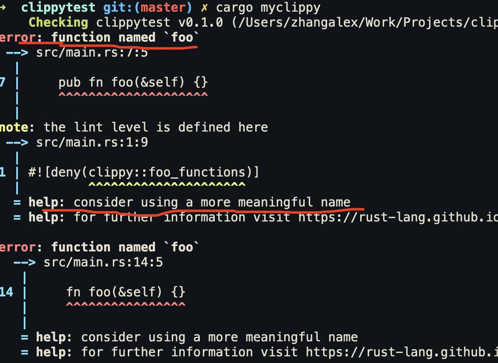

华为 | 如何定制 Rust Clippy
作者：华为可信软件工程和开源2012实验室
Clippy 是什么
Clippy 是 Rust 官方提供的 代码检查 lint 工具，通过静态分析，来检查代码中有问题或不符合指定规范的代码。
项目地址：https://github.com/rust-lang/rust-clippy
安装
#![allow(unused)] fn main() { rustup component add clippy }
使用
#![allow(unused)] fn main() { cargo clippy }
配置
可以在项目中添加 clippy.toml 或 .clippy.toml 来指定使用的 Lints 。
类似于：
#![allow(unused)] fn main() { avoid-breaking-exported-api = false blacklisted-names = ["toto", "tata", "titi"] cognitive-complexity-threshold = 30 }
Cargo Clippy 中目前包含超过 450 个 Lint 。
Rust 编译器内置 Lint 介绍
在 Rust 编译器 中 lint 包含四种级别：
- allow ，编译器
- warn
- deny
- forbid
每个 lint 都有一个 默认级别。下面是一个分类：
- 默认允许的 Lints : 默认情况下，编译器允许的 Lints 。
- 默认警告Lints : 默认情况下，编译器会警告的 LInts 。
- 默认拒绝的 Lints ： 默认情况下，编译器会拒绝的lints。
编译器内置 Lint 主要是围绕 Rust 语言特性。开发者可以通过配置文件来修改 Lints 等级。
Clippy 中的 Lints
Clippy 中的 Lints 级别包括：
- Allow
- Warn
- Deny
- Deprecated
Clippy 中的 lints 分类如下表：
| 分类 | 描述 | 默认级别 |
|---|---|---|
clippy::all | all lints that are on by default (correctness, style, complexity, perf) 所有默认的 Lints 都会被开启（正确性、风格、复杂性、性能） | warn/deny |
clippy::correctness | code that is outright wrong or very useless 代码是完全错误或根本无用的 | deny |
clippy::style | code that should be written in a more idiomatic way 代码应该用更惯用的方式来写 | warn |
clippy::complexity | code that does something simple but in a complex way 代码把简单的事情写复杂了 | warn |
clippy::perf | code that can be written to run faster 代码的写法在性能上还可以改进 | warn |
clippy::pedantic | lints which are rather strict or might have false positives 这些 lints 相当严格或可能有误报 | allow |
clippy::nursery | new lints that are still under development 仍然在开发中的新 lints | allow |
clippy::cargo | lints for the cargo manifest 用于cargo manifest 的 lints | allow |
总的来说，Clippy 对代码的检查主要是包括下面五个方面：
-
代码正确性（Correctness）。检查代码中不正确的写法。
-
代码风格（Style）。相比于 rustfmt，clippy 更偏向于代码实践中的惯用法检查。
-
代码复杂性（Complexity）。检查过于复杂的写法，用更简洁的写法代替。
-
代码不灵动 （Pedantic）。写法过于教条。
-
代码性能（Perf）。
代码正确性
Lint 示例： absurd_extreme_comparisons (荒谬的极值比较)
检查关系中的一方是其类型的最小值或最大值的比较，如果涉及到永远是真或永远是假的情况，则发出警告。只有整数和布尔类型被检查。
代码示例：
#![allow(unused)] fn main() { let vec: Vec<isize> = Vec::new(); if vec.len() <= 0 {} if 100 > i32::MAX {} // 这里会报错：Deny ，因为 100 不可能大于 i32::MAX }
代码风格
Lint 示例： assertions_on_constants （对常量的断言）
用于检查 assert!(true) 和 assert!(false) 的情况。
代码示例：
#![allow(unused)] fn main() { assert!(false) assert!(true) const B: bool = false; assert!(B) // 会被编译器优化掉。 }
代码复杂性
Lint 示例： bind_instead_of_map
检查
_.and_then(|x| Some(y)),_.and_then(|x| Ok(y))or_.or_else(|x| Err(y))这样的用法，建议使用更简洁的写法_.map(|x| y)or_.map_err(|x| y)。
代码示例：
#![allow(unused)] fn main() { // bad let _ = opt().and_then(|s| Some(s.len())); let _ = res().and_then(|s| if s.len() == 42 { Ok(10) } else { Ok(20) }); let _ = res().or_else(|s| if s.len() == 42 { Err(10) } else { Err(20) }); // good let _ = opt().map(|s| s.len()); let _ = res().map(|s| if s.len() == 42 { 10 } else { 20 }); let _ = res().map_err(|s| if s.len() == 42 { 10 } else { 20 }); }
代码不灵动
Lints 示例： cast_lossless
用于检查可以被安全转换（conversion）函数替代的数字类型之间的转换（ cast ）。
as强制转换与From转换从根本上不同。 From转换是“简单和安全”，而as强制转换纯粹是“安全”。在考虑数字类型时，仅在保证输出相同的情况下才存在From转换，即，不会丢失任何信息(不会出现截断或下限或精度下降)。 as强制转换没有此限制。
代码示例：
#![allow(unused)] fn main() { // bad fn as_u64(x: u8) -> u64 { x as u64 } // good fn as_u64(x: u8) -> u64 { u64::from(x) // from内部其实也是as，但只要是实现 from 的，都是无损转换，在代码可读性、语义上更好 } }
代码性能
Lints 示例： append_instead_of_extend
检查动态数组中是否出现
extend，建议使用append代替。
代码示例：
#![allow(unused)] fn main() { let mut a = vec![1, 2, 3]; let mut b = vec![4, 5, 6]; // Bad a.extend(b.drain(..)); // Good a.append(&mut b); // 用 append 代替 extend 更加高效和简洁。 }
还有一些其他分类，比如包括一些「约束性（Restriction）」建议、对 cargo.toml 的检查、以及正在开发中的Lints 等。
如何定制 Clippy Lint
定制 Clippy Lint 有两种办法：
- 方法一：fork rust-clippy 项目，自己维护。因为使用了不稳定的接口，所以维护和使用不太方便。
- 方法二：使用第三方 Dylint 工具。维护自定义 lint 比方法一更方便。
方法一：fork clippy
在 fork Clippy 定制自己的 LInt 之前，还需要了解 Clippy 的 工作机制。
Clippy 工作机制

Clippy 通过 rust_driver 和 rustc_interface 这两个库，可以把 rustc 作为库来调用。
rustc_driver 本质上就像是整个rustc 编译器的main函数（入口）。它使用在rustc_interface crate中定义的接口以正确的顺序运行编译器。
rustc_interface crate为外部用户提供了一个（未稳定的）API，用于在编译过程中的特定时间运行代码，允许第三方（例如RLS或rustdoc）有效地使用rustc的内部结构作为分析crate 或 模拟编译器过程的库。
对于那些使用 rustc 作为库的人来说，rustc_interface::run_compiler() 函数是进入编译器的主要入口。它接收一个编译器的配置和一个接收编译器的闭包。run_compiler从配置中创建一个编译器并将其传递给闭包。在闭包中，你可以使用编译器来驱动查询，以编译一个 crate 并获得结果。这也是 rustc_driver 所做的。
rustc_interface 组件库中定义了Compiler 结构体，持有 register_lints 字段。该 Compiler结构体就是编译器会话实例，可以通过它传递编译器配置，并且运行编译器。
register_lints 是 持有 LintStore 可变借用的闭包，其类型签名是 Option<Box<dyn Fn(&Session, &mut LintStore) + Send + Sync>>。
LintStore 是 rustc_lint 组件库中定义的类型。
#![allow(unused)] fn main() { pub struct LintStore { /// Registered lints. lints: Vec<&'static Lint>, // 构造不同种类的 lint pass /// Constructor functions for each variety of lint pass. /// /// These should only be called once, but since we want to avoid locks or /// interior mutability, we don't enforce this (and lints should, in theory, /// be compatible with being constructed more than once, though not /// necessarily in a sane manner. This is safe though.) pub pre_expansion_passes: Vec<Box<dyn Fn() -> EarlyLintPassObject + sync::Send + sync::Sync>>, pub early_passes: Vec<Box<dyn Fn() -> EarlyLintPassObject + sync::Send + sync::Sync>>, pub late_passes: Vec<Box<dyn Fn() -> LateLintPassObject + sync::Send + sync::Sync>>, /// This is unique in that we construct them per-module, so not once. pub late_module_passes: Vec<Box<dyn Fn() -> LateLintPassObject + sync::Send + sync::Sync>>, /// Lints indexed by name. by_name: FxHashMap<String, TargetLint>, // lint group，通过一个名字触发多个警告，把lint分组 /// Map of registered lint groups to what lints they expand to. lint_groups: FxHashMap<&'static str, LintGroup>, } }
可以注册的 lint pass 还分好几类：
- early_passes：表示该类型的
lint pass对应的是EarlyContext，是在 AST 层级的 lint 检查，还未到 HIR 层面。 - late_passes：表示该类型的
lint pass对应的是LateContext，是在 类型检查之后的 lint 检查。意味着这样的检查需要获取类型信息。类型检查是在 HIR 层级做的。
在 rust_interface 中，还定义了相应的 check 方法：early_lint_methods! 定义的很多check方法 和 late_lint_methods。
声明一个 lint pass 需要使用 declare_late_lint_pass! 宏 中定义的 rustc_lint::LateLintPass trait。
再来看 run_compiler函数。
#![allow(unused)] fn main() { pub fn run_compiler<R: Send>(mut config: Config, f: impl FnOnce(&Compiler) -> R + Send) -> R { tracing::trace!("run_compiler"); let stderr = config.stderr.take(); util::setup_callbacks_and_run_in_thread_pool_with_globals( config.opts.edition, config.opts.debugging_opts.threads, &stderr, || create_compiler_and_run(config, f), // 设置一个回调函数 ) } // 回调函数 pub fn create_compiler_and_run<R>(config: Config, f: impl FnOnce(&Compiler) -> R) -> R { let registry = &config.registry; let (mut sess, codegen_backend) = util::create_session( config.opts, config.crate_cfg, config.diagnostic_output, config.file_loader, config.input_path.clone(), config.lint_caps, config.make_codegen_backend, registry.clone(), ); // 。。。省略 let compiler = Compiler { sess, codegen_backend, input: config.input, input_path: config.input_path, output_dir: config.output_dir, output_file: config.output_file, register_lints: config.register_lints, // 配置 register_lints override_queries: config.override_queries, }; } }
再看看 rustc_driver库，其中定义了 Callbacks trait ：
#![allow(unused)] fn main() { pub trait Callbacks { /// Called before creating the compiler instance fn config(&mut self, _config: &mut interface::Config) {} /// Called after parsing. Return value instructs the compiler whether to /// continue the compilation afterwards (defaults to `Compilation::Continue`) fn after_parsing<'tcx>( &mut self, _compiler: &interface::Compiler, _queries: &'tcx Queries<'tcx>, ) -> Compilation { Compilation::Continue } /// Called after expansion. Return value instructs the compiler whether to /// continue the compilation afterwards (defaults to `Compilation::Continue`) fn after_expansion<'tcx>( &mut self, _compiler: &interface::Compiler, _queries: &'tcx Queries<'tcx>, ) -> Compilation { Compilation::Continue } /// Called after analysis. Return value instructs the compiler whether to /// continue the compilation afterwards (defaults to `Compilation::Continue`) fn after_analysis<'tcx>( &mut self, _compiler: &interface::Compiler, _queries: &'tcx Queries<'tcx>, ) -> Compilation { Compilation::Continue } } }
该trait中定义了在编译不同阶段要执行的回调函数。
所以，在 Clippy 的 driver.rs 中就做了如下定义：
#![allow(unused)] fn main() { struct ClippyCallbacks { clippy_args_var: Option<String>, } // 为 ClippyCallbacks 实现 rustc_driver::Callbacks ，定义 config 方法 // 该 config 方法创建编译器实例之前被执行的 impl rustc_driver::Callbacks for ClippyCallbacks { fn config(&mut self, config: &mut interface::Config) { let previous = config.register_lints.take(); let clippy_args_var = self.clippy_args_var.take(); config.parse_sess_created = Some(Box::new(move |parse_sess| { track_clippy_args(parse_sess, &clippy_args_var); })); // 注册 lints config.register_lints = Some(Box::new(move |sess, lint_store| { // technically we're ~guaranteed that this is none but might as well call anything that // is there already. Certainly it can't hurt. if let Some(previous) = &previous { (previous)(sess, lint_store); } let conf = clippy_lints::read_conf(sess); clippy_lints::register_plugins(lint_store, sess, &conf); clippy_lints::register_pre_expansion_lints(lint_store); clippy_lints::register_renamed(lint_store); })); // FIXME: #4825; This is required, because Clippy lints that are based on MIR have to be // run on the unoptimized MIR. On the other hand this results in some false negatives. If // MIR passes can be enabled / disabled separately, we should figure out, what passes to // use for Clippy. config.opts.debugging_opts.mir_opt_level = Some(0); } } }
所以，Clippy 通过 ClippyCallbacks 的 config 来注册 lints 。在 config 函数内部，通过调用 clippy_lints::read_conf(sess) 来读取 clippy 配置文件里的lint。在 clippy_lints 里还定义了 register_plugins，使用 rustc_lint::LintStore 来注册 clippy 里定义的 lints。
以上就是 Clippy 的工作机制。
自定义 Clippy lints
通过了解 Clippy 工作机制，可以看得出来，如果要自定义 Clippy lints，是需要严重依赖 rustc 版本的，因为 rustc_interface 提供的接口并不稳定。所以维护成本比较高。
如果一定要通过这种方式自定义 Clippy lints ，需要按以下步骤开发。
安装配置 Clippy
- 下载 Clippy 源码。
- 执行
cargo build和cargo test。因为Clippy 测试套件非常大，所以可以只测试部分套件，比如，cargo uitest，或cargo test --test dogfood。如果 UITest 和预期不符，可以使用cargo dev bless更新相关文件。 - Clippy 提供了一些开发工具，可以通过
cargo dev --help查看。
UI测试的目的是捕捉编译器的完整输出，这样我们就可以测试演示的所有方面。
测试正常的话，修改Clippy 生成二进制的名字，防止影响我们开发环境中安装的 Clippy命令。
- 在
Cargo.toml中修改
#![allow(unused)] fn main() { [[bin]] name = "cargo-myclippy" // 此处原本是 "cargo-clippy" test = false path = "src/main.rs" [[bin]] name = "clippy-mydriver" // 此处原本是 "clippy-mydriver" path = "src/driver.rs" }
- 修改
src/main.rs
#![allow(unused)] fn main() { .with_file_name("clippy-mydriver"); // 将使用 `clippy-driver` 的地方修改为 `clippy-mydriver` }
起一个有意义的名字
定义 lints 需要先起一个符合 Lints 命名规范 的名字。
Lints 命名规范的首要原则就是：lint 名字要有意义。比如 allow dead_code，这是有意义的，但是allow unsafe_code这个就有点过分了。
具体来说，有几条注意事项：
- Lint 名称应该标明被检查的「坏东西」。比如
deprecated，所以，#[allow(deprecated)](items)是合法的。但是ctypes就不如improper_ctypes更明确。 - 命名要简洁。比如
deprecated，就比deprecated_item更简洁。 - 如果一个 lint 应用于特定的语法，那么请使用复数形式。比如使用
unused_variables而不是unused_variable。 - 捕捉代码中不必要的、未使用的或无用的方面的行文应该使用术语
unused，例如unused_imports、unused_typecasts。 - lint 命名请使用蛇形（snake case）命名，与函数名的方式相同。
设置样板代码
假如新的 lint 叫 foo_functions，因为该lint不需要用到类型信息（比如某结构体是否实现 Drop），所以需要定义 EarlyLintPass。
在 Clippy 项目根目录下，通过以下命令创建 Lint:
#![allow(unused)] fn main() { cargo dev new_lint --name=foo_functions --pass=early --category=pedantic }
如果没有提供 category ，则默认是 nursery 。
执行完该命令以后，在 Clippy-lint/src/ 目录下就会多一个 foo_functions.rs 的文件，文件中包含了样板代码：
#![allow(unused)] fn main() { use rustc_lint::{EarlyLintPass, EarlyContext}; use rustc_session::{declare_lint_pass, declare_tool_lint}; use rustc_ast::ast::*; // 此宏用于定义 lint declare_clippy_lint! { /// **What it does:** /// /// **Why is this bad?** /// /// **Known problems:** None. /// /// **Example:** /// /// ```rust /// // example code where clippy issues a warning /// ``` /// Use instead: /// ```rust /// // example code which does not raise clippy warning /// ``` pub FOO_FUNCTIONS, // lint 名字大写 pedantic, // lint 分类 "default lint description" // lint 描述 } // 定义 lint pass。 注意，lint 和 lint pass 并不一定成对出现 declare_lint_pass!(FooFunctions => [FOO_FUNCTIONS]); // 因为不需要使用类型信息，此处实现 EarlyLintPass impl EarlyLintPass for FooFunctions {} }
除了此文件，还会创建 test/ui/foo_functions.rs 测试文件。
接下来，需要执行 cargo dev update_lints 命令来注册新 lint。
添加 Lint pass 内容
先来写一些测试代码。
Clippy使用UI测试进行测试。UI测试检查Clippy的输出是否与预期完全一致。每个测试都是一个普通的Rust文件，包含我们要检查的代码。Clippy的输出与一个.stderr文件进行比较。注意，你不需要自己创建这个文件，我们将进一步讨论生成.stderr文件。
我们首先打开在test/ui/foo_functions.rs创建的测试文件。
用一些例子来更新该文件，以便开始使用。
#![warn(clippy::foo_functions)] // Impl methods struct A; impl A { pub fn fo(&self) {} pub fn foo(&self) {} pub fn food(&self) {} } // Default trait methods trait B { fn fo(&self) {} fn foo(&self) {} fn food(&self) {} } // Plain functions fn fo() {} fn foo() {} fn food() {} fn main() { // We also don't want to lint method calls foo(); let a = A; a.foo(); }
可以使用 TESTNAME=foo_functions cargo uitest来执行测试。
可以看到输出：
#![allow(unused)] fn main() { test [ui] ui/foo_functions.rs ... ok }
接下来，打开 src/foo_functions.rs 编写 Lint 代码。
#![allow(unused)] fn main() { declare_clippy_lint! { /// **What it does:** /// /// **Why is this bad?** /// /// **Known problems:** None. /// /// **Example:** /// /// ```rust /// // example code /// ``` pub FOO_FUNCTIONS, pedantic, // 该类型的lint 等级 默认是 Allow "function named `foo`, which is not a descriptive name" // 修改 lint 声明的描述内容 } }
可以通过执行 cargo dev serve在本地打开网页服务，可以查到 foo_functions显示的描述。

`Pedantic的默认lint 等级是allow\，定义于 https://github.com/rust-lang/rust-clippy/blob/master/clippy_lints/src/lib.rs#L119
通常在声明了lint之后，我们必须运行cargo dev update_lints 来更新一些文件，以便 Clippy 知道新的 Lint。由于上面是用cargo dev new_lint ... 命令来生成lint声明，所以这是自动完成的。
虽然 update_lints自动完成了大部分工作，但它并没有自动完成所有工作。我们必须在clippy_lints/src/lib.rs的register_plugins函数中手动注册我们的lint pass。
#![allow(unused)] fn main() { pub fn register_plugins(store: &mut rustc_lint::LintStore, sess: &Session, conf: &Conf) { // 此处省略 2000 行代码 // foo_functions store.register_early_pass(|| box foo_functions::FooFunctions); } }
该函数有 2000 多行代码，维护起来可想而知多么麻烦了。
因为此 lint pass 只是检查函数名字，不涉及类型检查，所以只需要 AST 层面的处理即可。关于 EarlyLintPass 和 LateLintPass 的区别前文已经介绍过。EarlyLintPass 比 LateLintPass 更快一些，然而 Clippy 的性能并不是关注的重点。
由于我们在检查函数名时不需要类型信息，所以在运行新的lint自动化时，我们使用了--pass=early，所有的样板导入都相应地被添加了。
下一步就可以实现 Lint 的检查逻辑了。
#![allow(unused)] fn main() { // src/foo_functions.rs impl EarlyLintPass for FooFunctions { // 此处 check_fn 是内置 EarlyLintPass trait 包含方法，前文介绍过 fn check_fn(&mut self, cx: &EarlyContext<'_>, fn_kind: FnKind<'_>, span: Span, _: NodeId) { // TODO: Emit lint here 此处编写检查逻辑 } } }
对于如何检查函数名字，在 clippy_utils/src/diagnostics.rs中定义了一些帮助函数。经过查找，span_lint_and_help函数在此处使用比较适合。
#![allow(unused)] fn main() { // src/foo_functions.rs use clippy_utils::diagnostics::span_lint_and_help; use rustc_span::Span; use rustc_ast::{ast::NodeId, visit::FnKind}; impl EarlyLintPass for FooFunctions { fn check_fn(&mut self, cx: &EarlyContext<'_>, fn_kind: FnKind<'_>, span: Span, _: NodeId) { span_lint_and_help( cx, FOO_FUNCTIONS, span, "function named `foo`", None, "consider using a more meaningful name" ); } } }
执行测试代码，输出如下：


诊断信息是有效果了，但是缺乏一些lint检测逻辑。所以进一步修改：
#![allow(unused)] fn main() { impl EarlyLintPass for FooFunctions { fn check_fn(&mut self, cx: &EarlyContext<'_>, fn_kind: FnKind<'_>, span: Span, _: NodeId) { // 增加判断逻辑 fn is_foo_fn(fn_kind: FnKind<'_>) -> bool { match fn_kind { FnKind::Fn(_, ident, ..) => { // check if `fn` name is `foo` ident.name.as_str() == "foo" } // ignore closures FnKind::Closure(..) => false } } // 增加判断逻辑 if is_foo_fn(fn_kind) { span_lint_and_help( cx, FOO_FUNCTIONS, span, "function named `foo`", None, "consider using a more meaningful name (考虑使用一个更有意义的函数名字)" ); } } } }
再次执行测试输出：

接下来执行：
cargo dev bless更新.stderr文件。这个.stderr文件是需要提交的。如果测试出现错误，记得执行这一步。cargo test。
执行 cargo test 失败，因为 clippy 不允许出现 中文描述。所以，修改：
#![allow(unused)] fn main() { if is_foo_fn(fn_kind) { span_lint_and_help( cx, FOO_FUNCTIONS, span, "function named `foo`", None, "consider using a more meaningful name (考虑使用一个更有意义的函数名字)" // 此处不允许中文，当然你也可以修改 clippy 自身的 lint 配置 ); } // 修改为 if is_foo_fn(fn_kind) { span_lint_and_help( cx, FOO_FUNCTIONS, span, "function named `foo`", None, "consider using a more meaningful name" ); } }
测试成功。
最后执行 cargo dev fmt，格式化代码。
到目前为止，自定义 clippy lint 已经完成。
测试 Clippy lint 效果
因为我们自定义的 Clippy 二进制名字已经被修改了，所以可以直接安装，不怕和已安装的clippy有冲突了。
执行以下命令安装自定义的Clippy:
#![allow(unused)] fn main() { cargo install --bin=cargo-myclippy --bin=clippy-mydriver --path=. }
然后重新使用 cargo new clippytest创建一个新项目。
将 src/main.rs修改为：
#![warn(clippy::foo_functions)] // Impl methods struct A; impl A { pub fn fo(&self) {} pub fn foo(&self) {} pub fn food(&self) {} } // Default trait methods trait B { fn fo(&self) {} fn foo(&self) {} fn food(&self) {} } // Plain functions fn fo() {} fn foo() {} fn food() {} fn main() { // We also don't want to lint method calls foo(); let a = A; a.foo(); }
【如有必要】然后在 clippytest项目目录下创建 rust-toolchain 文件：
#![allow(unused)] fn main() { [toolchain] channel = "nightly-2021-06-17" components = ["llvm-tools-preview", "rustc-dev", "rust-src"] }
这个文件里的配置，要和 官方 rust-clippy 下一致，也就是你fork的那个原项目。
然后命令行执行：cargo myclippy，输出：

成功！
然后回去 src/main.rs中，将 #![warn(clippy::foo_functions)] 改为 #![error(clippy::foo_functions)]，再次执行 cargo myclippy，输出：

成功！
到此为止，自定义 Clippy Lint 成功！
小结
通过 fork clippy，完全可以定制自己的 Lint 。但是也有很明显的缺陷：
- Clippy 内置 lint 很多，需要手工注册自定义lint，想想那个 2000 行的函数就头疼。
- Clippy 依赖 rustc_interface 是未稳定的 API 。clippy_utils 里提供的helper方法也是依赖于编译器这个未稳定接口，这样不同编译器版本就会难以兼容。导致不能通用。
- 需要命名为自己的 Clippy 二进制文件，避免和原本的 Clippy 冲突。
如果自定义 Lint 可以 PR 更好，但并不是所有自定义 Lint 都可以提交到官方 PR ，必然需要维护自己的/团队的特殊场景的 Lint。就会面对上面的缺陷。
有没有更好的办法呢？
方法二：使用 Dylint
参考：Write Rust lints without forking Clippy
社区有人开发了一个工具： Dylint 。它的特点：
- 以动态库的方式来提供 lint 。而 Clippy 是静态库。Clippy 的所有 lint 都使用相同的编译器版本，因此只需要
rustc_driver。 - Dylint 用户可以选择从不同编译器版本的库中加载 lint。

Dylint 可以动态构建 rustc_driver。换句话说，如果用户想要 A 版本的编译器库中加载 lint，并且找不到 A 版本的 rustc_driver，Dylint 将构建一个新的 A 版本的rustc_driver。rustc_driver缓存在用户的主目录中，因此仅在必要时重建它们。
Dylint 根据它们使用的编译器版本对库进行分组，使用相同编译器版本的库一起加载，并和它们的 lint 一起运行。这允许在 lint 之间共享中间编译结果(如：符号解析，类型检查，trait求解等)。
在上图中，如果库 U 和 V 都使用了 A 版本的编译器，这两个库将被放到同一个分组中。A 版本编译器的rustc_driver将只被调用一次。rustc_driver在将控制权移交给 Rust 编译器之前会在库 U 和库 V 中注册 lint。
安装和配置
通过下面命令安全 dylint：
#![allow(unused)] fn main() { cargo install cargo-dylint cargo install dylint-link }
然后获取模版项目：
#![allow(unused)] fn main() { git clone https://github.com/trailofbits/dylint-template }
或者使用 cargo-generate来创建模版
#![allow(unused)] fn main() { cargo generate --git https://github.com/trailofbits/dylint-template }
将项目命名为 ：mylints
然后进入到项目根目录，执行：
#![allow(unused)] fn main() { cargo build cargo dylint fill_me_in --list }
编写 lint
因为生成的模版其实和 上面 fork clippy 自定义生成的代码模版类似，所以直接将上面的 lint 代码复制过来。
创建新文件 src/foo_functions.rs。
#![allow(unused)] fn main() { use clippy_utils::diagnostics::span_lint_and_help; use rustc_ast::{ast::NodeId, visit::FnKind}; use rustc_lint::{EarlyContext, EarlyLintPass}; use rustc_span::Span; use rustc_lint::LateLintPass; use rustc_session::{declare_lint, declare_lint_pass}; declare_lint! { /// **What it does:** /// 检查 以 foo 命名的函数，并给予警告 /// **Why is this bad?** /// 因为该命名没有意义 /// **Known problems:** None. /// /// **Example:** /// /// ```rust /// // example code where clippy issues a warning /// ``` /// Use instead: /// 考虑使用一个更有意义的函数名字 /// ```rust /// // example code which does not raise clippy warning /// ``` pub FOO_FUNCTIONS, Warn, // 注意：这里和 fork Clippy 略有不同 "function named `foo`, which is not a descriptive name" } declare_lint_pass!(FooFunctions => [FOO_FUNCTIONS]); impl EarlyLintPass for FooFunctions { fn check_fn(&mut self, cx: &EarlyContext<'_>, fn_kind: FnKind<'_>, span: Span, _: NodeId) { fn is_foo_fn(fn_kind: FnKind<'_>) -> bool { match fn_kind { FnKind::Fn(_, ident, ..) => { // check if `fn` name is `foo` ident.name.as_str() == "foo" }, // ignore closures FnKind::Closure(..) => false, } } if is_foo_fn(fn_kind) { span_lint_and_help( cx, FOO_FUNCTIONS, span, "function named `foo`", None, "consider using a more meaningful name", ); } } } }
代码复制完毕之后，在 src/lib.rs 中添加：
#![allow(unused)] fn main() { mod foo_functions; #[no_mangle] pub fn register_lints(_sess: &rustc_session::Session, lint_store: &mut rustc_lint::LintStore) { lint_store.register_lints(&[foo_functions::FOO_FUNCTIONS]); lint_store.register_early_pass(|| Box::new(foo_functions::FooFunctions)); } }
注意：需要配置当前项目下 .cargo/config.toml 中针对当前架构平台的 target 指定的链接器，否则会报 找不到库 之类的错误。
#![allow(unused)] fn main() { [target.aarch64-apple-darwin] linker = "dylint-link" [target.x86_64-apple-darwin] linker = "dylint-link" [target.x86_64-unknown-linux-gnu] linker = "dylint-link" }
然后执行 cargo build 编译成功。
接下来需要设置几个环境变量：
#![allow(unused)] fn main() { export MY_LINTS_PATH=/Work/Projects/myworkspace/mylints export DYLINT_LIBRARY_PATH=$MY_LINTS_PATH/target/debug }
然后执行 cargo test。可以看到 uitest 的输出。
但是 dylint 有个缺点，就是 uitest 无法像 clippy那样（cargo dev bless） 更新引用。所以 cargo test 会测试失败。
但是可以在 src/lib.rs 中，添加：
#![allow(unused)] fn main() { #[allow(dead_code)] fn foo() {} }
然后在 mylints项目下执行： cargo dylint --all 。就能看到 lint 生效了。
以上是我们编写了独立的 lints。
测试独立项目
随便创建一个 新的项目 myproject，将 src/main.rs 换成和前面测试 clippy 时候用的代码。
基于前面设置好的 mylints ，我们只需要直接使用 cargo dylint --all 命令即可。
然后在该项目根目录下执行：
#![allow(unused)] fn main() { cargo dylint --all -- --manifest-path=/Work/Projects/myproject/Cargo.toml }
然后就可以正常执行 lint 检测了。
小结
使用 dylint 比较麻烦的是，文档不是很全，测试不支持更新引用，不如 fork clippy 方便测试。
但是 dylint 确实比较小巧，只需要维护我们自定义的lint 即可，不再需要维护 2000 多行的注册lint代码。
使用 dylint 的时候，因为也依赖了 clippy 的 clippy_utils，所以需要和 clippy 的 rustc 版本保持一致。
总结
上面总结了两种定制 Clippy Lints 的方法，各有优劣。
一个观点：
-
第一种方法比较适合 大公司/大团队，因为第一种方法比较完善，功能齐备，只是需要一个专门的团队来维护这个 lints。并且还有可能给上游去发 PR （如果需要），形成正向反馈，让工具更加完善。另外，也许可以给 Clippy 提供一个 Plugin 机制，方便维护定制的 Lint。
-
第二种方法适合小团队，没有多余的人力去维护，只需要定制自己的一些 lints 使用即可。
欢迎在评论区留言交流。
有用的参考资源：
以下资源对你编写 lint 将很有帮助：
- 添加一个新的 lint (针对 Clippy 但依然很有用)
- 编写 lint 的常用工具
- rustc_hir 文档